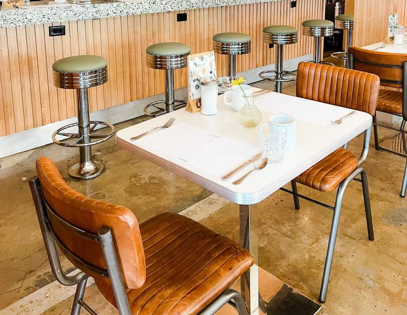

Our story
Same counter since 1962.
Eight stools, one griddle.
Ruth Hollis opened the counter with eight stools and one griddle. Her grandson Danny runs it now, and the pancake batter is still mixed by hand before the sun comes up.
“Half our regulars order before they sit down. The other half just nod, and we know.”Danny Hollis, owner
This story and quote are invented for the sample. On a real site, they come from the owner.
- 6:02amCoffee’s on before the door unlocks.
- 60Chicken & waffles a day, weekends only.
- 1Special a day, on a guest check.

A morning at Hollis Street